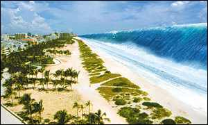

Appalling
as the Asian tsunami disaster was, it's
absolutely nothing compared to the apocalyptic event that is yet to
come. Somewhere over the next stretch of time, New Yorkers will have to deal
with a HUGE tidal wave of biblical proportions. Meet the La Palma Megatsunami -- and shiver.
Try
to surf this: a wave almost twice as tall as the Empire State Building, and traveling
faster than an airplane, at a breathtaking 700 kilometers per hour. Enough to give you the creeps, right? Well, it should. For
the question is not so much if such a massive wave will one day slosh across
the oceans -- but when.
It
all starts with a faint rumbling of the earth, thousands of miles away. Near
the African shore, the volcanic island of La Palma will rumble with seismic
activity, announcing yet another eruption of the Cumbre Vieja volcano on
the southern half of the island. But this time, the
unstable western flank of the volcano doesn't
hold. A huge chunk of the island simply breaks off and drops into the Atlantic
Ocean. Plunge! No; PLUNGE!
Immediately,
up rises a tsunami. And not just a tsunami:
the sea is pushed up something like 650 meters, as 500 billion tons of rock and
debris hit the ocean. Witnesses to the event will
see how a massive wall of water towers up and starts sloshing westwards across
the Atlantic, at the astonishing speed of over 700 kilometers per
hour. Destination: US East Coast.
Now
that will bring about some stress on the other side of the Atlantic. New Yorkers and millions of other
inhabitants of the US coastal region will hear about it on the radio: within eight hours,
the entire east coast will be splashed away! Hundreds of millions of Americans
will get the hell out to escape the
wet cataclysm, turning every city and every road in the area into total chaos.
|  |
|
|
Some
people will hope the Megatsunami will just break down by itself. And indeed,
while crossing the ocean, the wave dims down a bit, until it is perhaps 'only'
some tens of meters high.
But
the La Palma
Megatsunami isn't just the next dull wave. It will pass storms unscathed, and bombs
won't do it much harm either. You
see, the Megatsunami we're dealing with is an endless wall of water that stretches
out across the entire Atlantic! Not exactly the kind of wave that easily breaks
down.
Then, after eight hours, the incredible happens. At the US shore, all water suddenly recedes, as it is `sucked up' by the wave to come. You will be able to see the bottom of the ocean for hundreds of meters ahead. But your attention will be caught by something else: this huge wall of water, that's moving in on you a lot faster than you think might be good for your health.
As
it closes in on the steep coast, the tsunami will grow and grow some more,
until it is perhaps several hundreds of meters high. Seconds later, it
impacts. With unimaginable force, billions of gallons of water slam into the
coastal areas. Skyscrapers snap, bridges are ripped to
pieces and outside the cities, forests and villages are swept away. And obviously, if you're still around, it's only
likely you're killed in the whole show. The La Palma wave will
push thirty to forty kilometers into the land: since the wave is so
long, more and more water will be pushed land inwards, until the entire wave
has finally rolled onto the shore.
Next, the water mass withdraws. With unimaginable force, the wave is sucked back into the ocean, dragging with it everything and everyone it encounters. So one moment you're high and dry; only minutes later, you find yourself floundering somewhere in the Atlantic, well away from the shore. In effect, the Megatsunami will wash the coastal area clean. It will destroy every city on the US East Coast. And although it won't really bring about the end of life on our planet, millions will die -- not to mention the total disruption of the world when the urban heart of America is swept away.
Like almost every apocalyptic scenario described here on Exit Mundi, the one with the tidal wave is nothing really special in Earth's history. You see, it's perfectly normal for a volcanic island to collapse every once in a while. That's why on several occasions in our prehistoric past, giant killer waves rolled over the seas, bringing about doom and destruction everywhere they hit land (see table).
| Ohau island, Hawaii | Many times in history, big chunks of Hawaii plummeted into the sea. The biggest event occurred 2 million years ago, when a piece of rock ten times as big as the Mount Everest broke off the island of Ohau. Result: a HUGE tsunami, hundreds of meters high and tens of kilometers long. |
| Cape Verde island | 80,000 years ago, the west coast of Africa was rinsed clean, as another massive tsunami hit it at nearly full force. One hour earlier, a massive chunk of the Cape Verde island had plunged into the sea. |
| Réunion island | 4,000 years ago, the island of Réunion in the Indian Ocean snapped in half. Another megatsunami popped up. Several hours later, it slammed into the coasts of Australia. |
|
|
|
On the other hand: some scientists hope the island will snap into pieces
before hitting the Atlantic. That would almost certainly lead to a smaller
wave: compare throwing a piece of rock into a pond with dropping a handful of
sand into it.
No-one
knows if the island is able to withstand the next volcanic eruption.
Gladly, we'll know several weeks in advance the Cumbre Vieja is about to go
berserk again. But then again, will our governments take the warnings of the
geologists serious enough if it gets that far? Will they be willing to
evacuate the entire US East Coast and large parts of Europe, following the
advice of only a handful of scientists? Somehow, Exit Mundi doubts it. Perhaps
the Mother of all Waves will take us by surprise after all.
As one researcher (Bill McGuire) put it: "There’s a problem with all
major natural catastrophes. Because we’ve never experienced these things, we
don’t think that they’re going to happen to us. We just ignore them, but
these sorts of events have occurred throughout geological history. They’re
not going to stop happening just because we’re around."